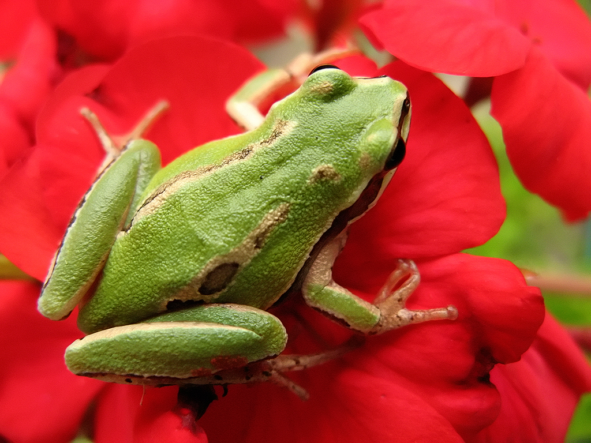

Buscamos
Buscamos hacer trabajos de permacomputación para organizaciones que tengan una mirada transversal del desarrollo, en sus dimensiones humana, no-humana, ambiental, económica, cultural, y más.
Somos una cooperativa ubicada en la
Patagonia argentina (planeta Tierra),
que se enfoca en brindar soluciones sociotécnicas inspiradas en la
permacomputación
Buscamos hacer trabajos de permacomputación para organizaciones que tengan una mirada transversal del desarrollo, en sus dimensiones humana, no-humana, ambiental, económica, cultural, y más.
Hacemos trabajos de alta calidad y nos enfocamos en los detalles, logrando armonizar los objetivos de nuestros clientes con los intereses del público al que buscan llegar.
Somos una cooperativa de trabajo en constantemente formación y transformación, con más de 15 años de experiencia y decenas de clientes que confían en nuestro trabajo.